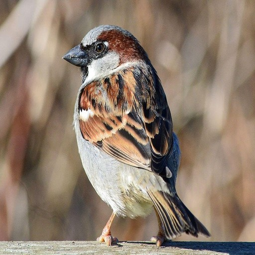
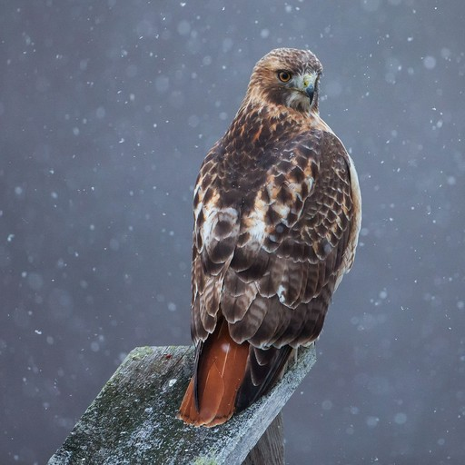
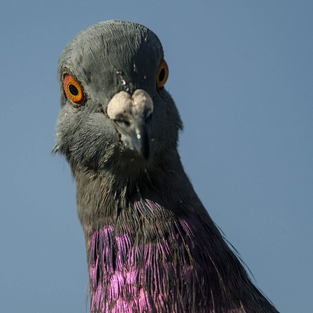
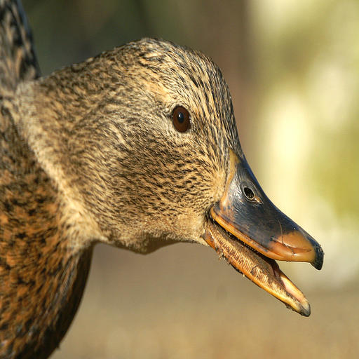
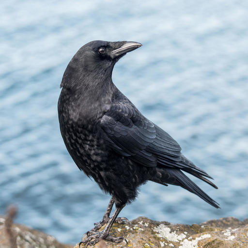
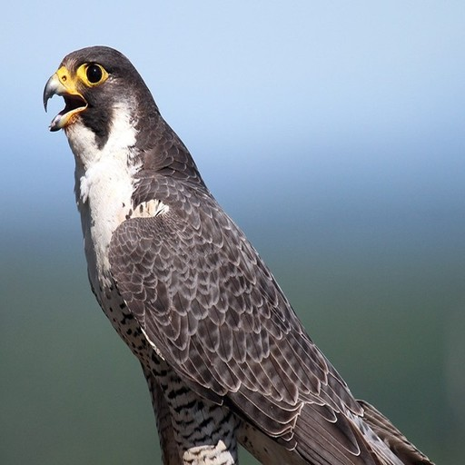

| House Sparrow |
- Passer domesticus
- Was introduced to the United States in Brooklyn, NY to control the Linden Moth population
- One of the most common birds in North America
- Sometimes considered pests
|
 |
| Red-tailed Hawk |
- Buteo jamaicensis
- The most widespread large hawk in North America
- Their plumage may vary wildly other than their eponymous red tail
- Surprisingly not the inspiration for the UML Riverhawk mascot
|
 |
| Pigeon |
- Columba livia
- "Rats of the Sky"
- Surprisingly Intelligent
- Foragers that primarily eat seeds
|
 |
| Mallard Duck |
- Anas platyrhynchos
- Almost all domested ducks are descended from this species
- The males have bright green heads while the females do not
- The males do not quack
|
 |
| American Crow |
- Corvus brachyrhynchos
- One of the most intelligent bird species in the world
- Can remember human faces
- Omnivores
|
 |
| Peregrine Falcon |
|
 |